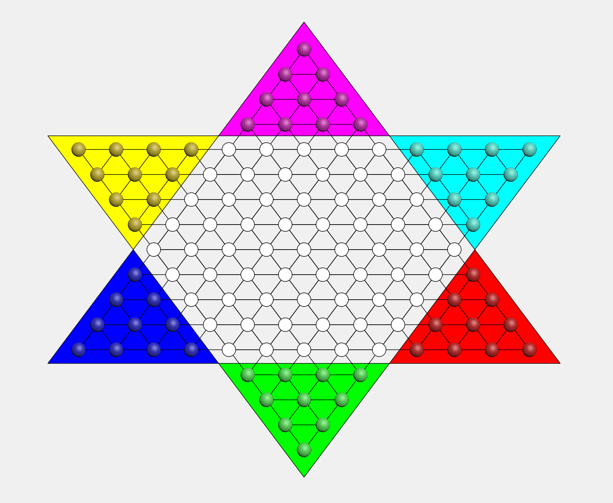
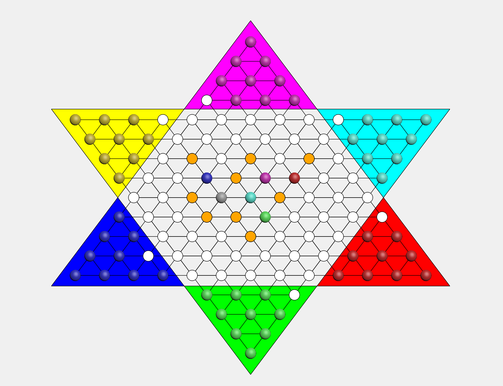

第一阶段报告¶
界面设计¶
设计开始界面：包含2,3,6人游戏模式和退出按钮。
棋盘设计¶
绘制棋盘¶
Qpainter画出6个三角形，分别代表六个棋群的位置，方便之后的染色、标记等操作。- 绘制121个棋盘位置，半径为12的圆形，绘制三个方向的斜线，最后将棋盘位置染成白色。
- 将六个棋群所在三角形以及六个棋群染色(
QPainter,Qbrush,drawLine,drawEllipse)。
坐标计算¶
- i=(33,0)，j=(0,44)，横向棋子之间距离为66，斜线方向两个棋子之间为55。
初始化操作¶
- 将棋盘上有棋子的地方用
occupied数组标记为真，其余为假，并在之后每一次移动中更新这个数组的状态。
棋子的基本移动¶
准备工作¶
- 创建棋盘坐标类
Location，包含横纵坐x1，y1和棋子类Stone，包含横纵坐标x0，y0。 - 将121个棋盘和60个棋子的横纵坐标与棋盘的像素坐标一一对应，并编号。
- 设置两个参数：
_selected_id,clickid,用来记录已选中的和当前点击的位置，将两个值初始化为-1。
调用mouseEventRelease()函数¶
获取鼠标所点的像素坐标，定义函数canMove()来检测点击位置是否有效，具体实现分两种情况：
- 此次点击之前无有效点击
- 取出点击位置的横纵坐标。
- 遍历棋盘的121个位置，计算这个坐标位和每个圆心的距离，如果小于半径，则为有效点击，取出当前棋盘位置的编号。
- 遍历棋子的60个位置，检测是否有一个棋子的位置和刚才点击的位置重合，如果有，将
clickid赋值为棋子编号。 - 此时
_selected_id的值为-1，将_selecetd_id=clickid，则记录了选中的棋子，调用update()将棋子重新染色。
- 此次点击之前有有效点击
- 若此次点击也为有效点击，取出坐标，将选中棋子(
s[_selected_id])的横纵坐标更新为目前的棋盘坐标，并调用update()函数。
- 若此次点击也为有效点击，取出坐标，将选中棋子(
规则设计¶
基本规则¶
- 若相邻六个点周围无棋子，可以跳周围相邻的。
- 若相邻六个点有棋子，且间隔相邻棋子的对应点无棋子，则可以跳。
具体实现¶
创建函数canMove()，判断移动操作是否合法。
- 在周围无棋子的情况下，如果移动距离小或等于两相邻点间的最大距离，则为合法操作。
- 在有棋子作为跳板的情况下，若移动距离小或等于两倍的两相邻点的最大距离，则为合法操作。
- 这个过程中由
occupied数组判断周围是否有棋子以及棋子是否可以作为跳板。
连跳设计¶
判断连跳（深度优先搜索）¶
- 第一层：搜索周围六个点，若无棋子，则将其标记为可能位置，用数组
Possible_Location标记，并同时调用update()染色；若有棋子，且其隔空位无棋子，将其隔空位标记为Possible_Location，并染色，然后将其作为中心点进行下一次深搜。 - 第n层(n≥2)：若无棋子，则停止搜索；若有棋子且满足跳板条件，同第一步。
还原¶
- 每次深搜完成之后，要将染色的可能位置变为原色，及白色，所以需要设计一个函数
wipe_dbfs()，将Possible_Location标记的位置全部染回白色。 - 由于棋子所走的位置一定也是在
Possible_Location上，也会被染成白色，所以还需要定义current_x和current_y记录刚才移动棋子的位置，避免被染成白色。
回合轮转¶
- 设置轮转：在类中定义
pattern变量，记录对战模式。重写QMainWindow的构造函数，应用控件，将对战人数的信息传到pattern中。pattern决定棋盘的初始染色和轮转模式。 - （以六人模式为例）此时
pattern为 6，state为目前轮转的状态，0 \sim 5 分别对应六个棋群，\texttt{state} \bmod \texttt{pattern} 值决定当前哪个棋群可以选中。
效果展示¶
- 界面 
- 自动判断（橙色为可能跳到的位置，灰色为当前选择的棋子） 